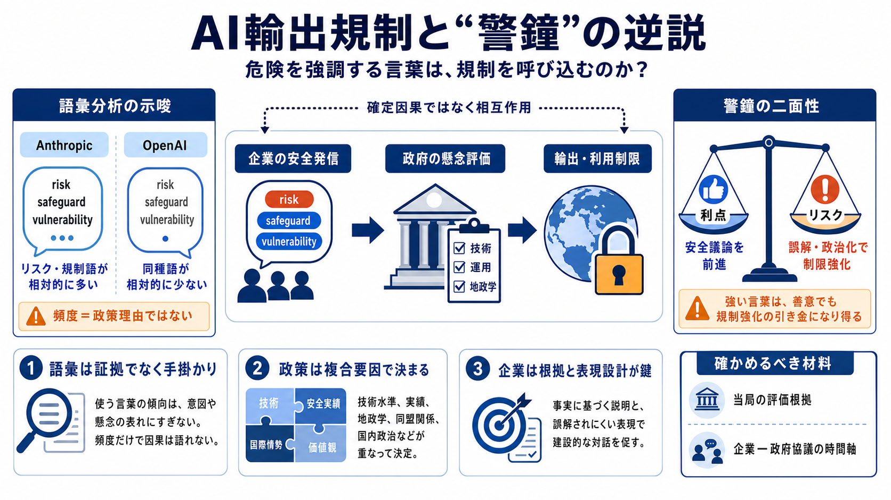

Anthropic's Safety Rhetoric May Have Fed Its Own Export Ban | AI Weekly
* The FT found Anthropic used risk-related terms in 2026 at five per 1,000 words, versus 0.6 per 1,000 at OpenAI. * Pres…

警鐘の逆説
「危険を強調する言葉」が、逆に“輸出の制限”を呼び込む可能性はあるのか。FTの語彙分析と、米政府の制限措置が重なる構図を整理します。
関係は単純？
言葉の頻度＝企業の意図や実際の危険を直接証明はできません。とはいえ、政治判断には多要因（安全保障・外交・産業・世論）が絡むため、“言説→政策”の相互作用は疑う価値があります。
言葉の温度差
FTはアンソロピックとOpenAIの公式発信をテキスト分析し、「risk（リスク）」「safeguard（保護措置）」「vulnerability（脆弱性）」などがどれほど出るかを比較した、と報じています。
相互作用の道筋
企業の安全コミュニケーションが、政府の懸念（正当化の材料）として参照されると、“より強い制限”へ進む余地が生まれます。ただし確定因果ではありません。
警鐘は刃にも鈍にも
正しい警告でも、受け取られ方次第で「過剰な警戒」や「政治的な加速」を招くことがあります。ここでは“恐怖を煽った”という批判が取り上げられます。
現実のブレーキ
記事では、米政府がアンソロピックの最新モデル（Mythos と Fable）について、外国籍の利用を禁じる措置を取った出来事を紹介しています。
ガードレールの設計
アンソロピックは、安全上の理由でMythosを最初は限定提供し、政府と調整しながら段階的に展開していたとされています。一方で、政府の懸念が十分に解消されたかは疑問視され得ます。
日本語補足：safeguard（保護措置）、vulnerability（脆弱性）という語の強調が、“実効性”の検証と連動して見られる点が焦点です。
緩衝材か火種か
語の頻度は、危険や規制を“より前面に出す戦略”として政策議論に影響し得ます。逆に言えば、同じ警鐘でも伝わり方が結果を左右します。
時間で変わる
記事は、発信のトーンが時間とともに変化している可能性にも触れます（例：2023年以降にリスク言及が減った等）。言葉は市場や戦略に応じて調整され得ます。
同盟の信頼
欧州や独立研究者の反応として、米国の一貫性への不信が取り上げられます。先端AIへの輸出制限が、他の政策（例：先端チップの対中輸出）と整合的に見えないことがあるためです。
Trust / Reputation（信頼・評判）: 安全コミュニケーションが信用を積む一方、誤解で割れる可能性。
結論の座標
この話の中心は「安全性を訴えること」と「規制を強める政治的効果」が、必ずしも一直線で結ばれない点です。
確かめるべき点
因果を断定するには追加情報が必要です。具体的には、当局の評価根拠（技術テスト、対象、ガードレールの実効性判断）と、企業—政府の協議記録です。
* The FT found Anthropic used risk-related terms in 2026 at five per 1,000 words, versus 0.6 per 1,000 at OpenAI. * Pres…
An analysis reported by the Financial Times found Anthropic stressed AI risks, regulation and safety far more frequently…
Startup sues US government for blocking access to Anthropic's Fable 5 AI model ... Polaris: A Godel Agent Framework for …
# Security Verification. [Financial Times](https://www.ft.com/). # Security Verification. For help please visit [help.ft…
Entrepreneur and co-host of My First Million podcast, formerly founder of The Hustle. Rory O'Driscoll is a co-founder an…